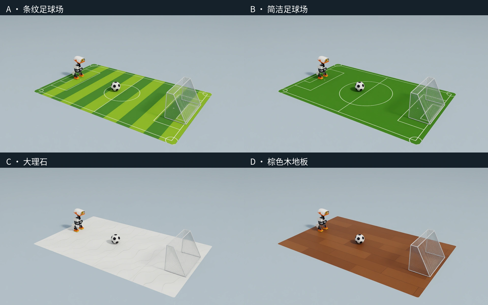

SELF-PACED WORKSHOP
认识 Microduck：先来踢一场球
先用键盘指挥 Microduck 走路、转向和踢球，再看看 Isaac Sim 如何把场景、机器人和预训练策略连接起来。
一只可以学习新技能的小机器人
Microduck 是 Pollen Robotics 与 Hugging Face 推出的开源双足机器人。它有 14 个主动关节，可以通过训练获得行走、踢腿等技能。我们用 NVIDIA Isaac Sim 搭建可反复试验的场景，用 Isaac Lab 组织训练与评测，逐步让机器人自己找到足球并完成射门。先不训练：加载官方已经训练好的行走与右脚踢球 ONNX 策略，体验一次手动射门。
打开球场，用键盘试一试

先完成环境准备，在课程仓库根目录打开终端。下面的命令会打开 Isaac Sim，场景中的机器人、足球和球门与第 6 章自主射门任务采用相同的尺寸与物理配置。将输入法切换到英文，鼠标点击仿真窗口后，用下面的按键操作。若按键没有反应，先检查是否仍处于中文输入状态。
python3 scripts/workshop.py manual \
--seconds 600 \
--output outputs/manual-football-01| 按键 | 作用 |
|---|---|
| W / S | 向前 / 向后走 |
| A / D | 向左 / 向右侧移 |
| Q / E | 向左 / 向右转 |
| 松开方向键 | 给出零速度指令，回到站立 |
| 空格 | 执行一次右脚踢球，然后切回站立 |
| R / Esc | 重置本次场景 / 退出 |
先走到球旁边，再停下来：球应位于右脚前方，身体朝向球门。按空格出脚。若踢空，先调整站位；若失去平衡，按 R 重来。这里由您判断球在哪里、应该朝哪走，策略只负责把指令变成关节动作。如果某次尝试没能进球，可以想一想：是站位偏了、朝向不对，还是出脚时机不合适？这些判断正是后面要交给自主射门系统的任务。
默认站立并不是另一个始终抢占控制的“站起”技能：行走策略持续运行，收到零移动指令时保持站立；摔倒后的站起、坐下和轮滑是不同技能。键盘实验直接在接触面上运行策略；第 6 章自主任务另外等待身体与观测稳定后才开始检测。
再用轮滑，把球碰进球门
这一次从初始化到结束都使用轮滑模型：四个轮子是被动轮，仍由原来的 14 个舵机调整腿部姿态完成推进、转向和制动。无需切换走路，也不调用踢腿策略。先观察松开按键后仍会滑行，再练习提前减速；目标是把球碰进门，同时让小鸭子停在门前。
关闭上一场景后，在同一终端运行下面的命令。--locomotion rollers 选择轮滑的物理模型与固定策略，输出另存到一个新目录。
python3 scripts/workshop.py manual \
--locomotion rollers \
--seconds 600 \
--output outputs/manual-rollers-01| 按键 | 轮滑中的含义 |
|---|---|
| W | 向前推进 |
| S | 制动；短按并观察，持续按住可能开始倒滑 |
| Q / E | 左转 / 右转 |
| 松开按键 | 滑行，不保证立即停住 |
| 空格 | 调用一次有限时的滑行推射辅助；不会踢腿 |
| R / Esc | 重置 / 退出；A、D 不用于侧移 |
先用 W、Q、E 把球对到前轮前方，再用短促的 S 控制接近速度；您也可以在完成对位后试空格辅助。轮滑的推进量不是以米每秒为单位的速度目标，不能把 W 的内部数值直接当作实际速度。比较两种方式：步行射门先停稳再出脚；轮滑射门通过运动中的接触传递动量，随后制动。
轮滑从已经展开的静止腿姿初始化，不先播放步行或踢腿动作。四个轮胎保留官方外观、质量和惯量；为了稳定计算滚动接触，碰撞采用直径 30 毫米、宽 7.6 毫米的圆柱近似，简化了胎肩圆角。键盘、射门和坡地的轮滑实验共用这一配置，实际轮胎的摩擦与变形尚未标定。
Isaac Sim 如何构成这场实验
左右滑动查看完整图示
机器人 USD 不只是一张好看的网格：关节定义连接关系，碰撞形状决定接触位置，质量与惯量影响加速和转身，舵机模型影响目标角度如何变成实际运动。官网黑白足球的半径为 5 cm、质量为 30 g；球门内宽为 38.8 cm。Isaac Sim 提供场景与渲染，这里通过 Isaac Lab 的任务配置接入 Newton 物理后端。
cfg.scene.ball = RigidObjectCfg(
prim_path="{ENV_REGEX_NS}/Ball",
spawn=sim_utils.SphereCfg(
radius=0.05,
mass_props=sim_utils.MassPropertiesCfg(mass=0.03),
collision_props=sim_utils.CollisionPropertiesCfg(),
rigid_props=UsdPhysicsRigidBodyCfg(rigid_body_enabled=True),
),
init_state=RigidObjectCfg.InitialStateCfg(pos=(0.0, 0.0, 0.05)),
)
# Apply the shared official-ball asset, goal and floor materials.
scene_profile = configure_football(cfg, style="A")先固定场景与硬件约定
本课程的室内射门场景使用 1 × 1.6 米垫子、外尺寸为宽 40 × 深 20 × 高 25 厘米的固定式钢网球门，以及官网直径 10 厘米、质量 30 克的黑白足球。垫子提供短距离接近和射门空间；它并不代表机器人已能在狭小场地中任意绕行。门框直径暂取 6 毫米，因此两根立柱的中心距为 39.4 厘米，净开口为宽 38.8、高 24.4 厘米。定位使用中心距，进球判定使用净开口，不能互换。
地面提供两种足球场图案、浅色大理石和棕色木地板，均使用 1 × 1.6 米的展示区域、同一套机器人和灯光。球门按商品图做成侧面呈梯形、后网倾斜的钢网结构，固定其尺寸和材质。门框、网丝都有碰撞；地面暂按刚性平面处理，尚未模拟软垫压缩或起翘。不同贴图不意味着已经标定了各类实物地面的摩擦。


机器人使用官方 Microduck CAD 与带齿隙的全身碰撞模型。课程锁定 XL330 的 BAM 电机拟合、200 Hz 物理和 50 Hz 策略周期；15 个实体舵机中，行走策略控制 14 个，嘴部不由这份策略独立驱动。全身碰撞让头、腿与电池等部位在摔倒后能受到地面支撑，避免只有脚有碰撞时身体穿过地面。
这仍是有明确版本的仿真配置。相机型号对应 GC2093，但仿真采样为 960 × 540、15 Hz，70° 水平视场角尚未经过镜头标定；ToF 和身体 IMU 也有近似。它不能直接证明最新固件、所有硬件误差或 RK3566 上的完整部署已经复现。移到真机前，应核对实际硬件版本、电压、关节零位、镜头参数与端到端延迟。
截至 2026 年 10 月 23 日，对照官方仓库，课程所用 CAD 网格、基础质量与关节参数、电机拟合与当日上游一致；本轮补入官方全身碰撞配置。机械展示仍保留 CAD 中的 Pi Zero 2 W 板外形，而当前 Beta 软件面向 RK3566。不能把这块展示网格当作最新电子硬件实物；整套真机对应关系仍需逐项核对。
步行模式如何切换行走与踢球策略
| 文件 | 大小 | 作用 |
|---|---|---|
| walk.onnx | 793,705 字节，约 0.79 MB | 速度非零时行走；速度为零时站立 |
| kick-teacher.onnx | 793,685 字节，约 0.79 MB | 右脚踢球动作 |
课程的步行与踢球组合保留经过原任务验证的固定官方权重；它们不等于官网网页模拟器当天的最新步行权重。轮滑实验单独使用本次核对的官网轮滑模型。硬件参数是否对应、策略文件是否相同、任务是否通过，是三个需要分别检查的问题。
两个官方策略都接收 61 维观测，输出 14 个关节动作。网络包含 512、256、128 个单元的三个隐藏层，使用 ELU 激活；输入归一化参数已包含在 ONNX 中，不要再做一次不匹配的归一化。键盘没有逐个操纵关节，而是改变速度指令。出脚时速度归零，短时调用踢球策略，再平滑切回站立。这里不加载踢球残差模型。
# Read the state once per policy step, then select the active skill.
obs = env.observation_manager.compute(update_history=True)["policy"]
action = walk(obs)
if kick_start is not None:
phase = (step - kick_start) * 0.02
weight = 1.0 if phase < 0.14 else max(0.0, 1.0 - (phase - 0.14) / 0.12)
if weight:
action = torch.lerp(action, kick(obs), weight)
# The action manager maps network outputs to joint targets.
env.action_manager.process_action(action)手动实验把踢球保持时间设为 0.14 秒，再用 0.12 秒切回站立；这是本实验的技能切换设置，不是对官方权重的重新训练。策略文件大小小于 1 MB，不代表完整仿真只需要这么多显存。
python3 scripts/workshop.py inspect-model --model models/walk.onnx刚才是谁在决定下一步
检查理解
刚才您已经完成了哪些机器人还不会自主完成的判断？
查看解析
您识别了足球和球门、估计了距离、选择了接近路线和出脚位置，并决定何时踢球。第六章展示手工流程怎样完成这些判断，第七至九章讨论学习策略与任务智能体。
下一章先看看这些动作背后的机械结构，以及策略和物理引擎按什么节奏协同工作。